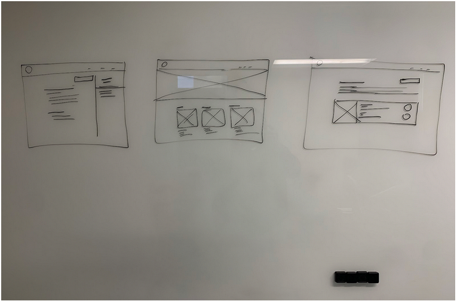
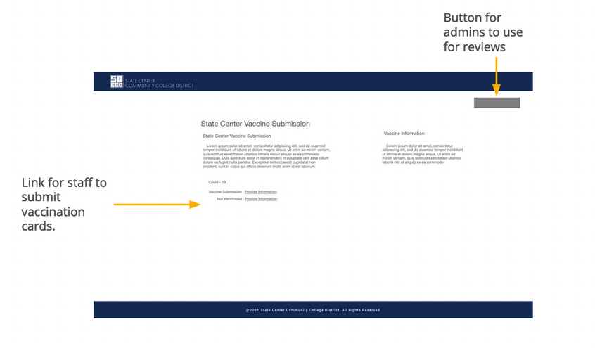

CASE STUDY
Covid Submissions

Project Overview
In April 2021, I led the development of a Covid Submissions application in response to a new policy requiring proof of vaccination for staff returning to the office. The project had an extremely tight deadline—just one week—and the primary goal was to create a secure and easy-to-use system that allowed staff to upload their vaccination cards for HR review.
My role on the project was comprehensive, encompassing Lead UX Designer, UX Researcher, UX Tester, Database Designer, Developer, and Tester. Despite the short timeline, I successfully delivered a solution that was deployed into production and processed over 3,000 submissions.
| Tech Stack | .NET Core, SQL Server, JavaScript, Bootstrap |
|---|---|
| Project Type | Full-stack web app |
| Role | Lead UX Designer, UX Researcher, UX Tester, Database Designer, Developer, Tester |
| Completion Date | Apr 2021 |

Key Features
- Mobile Upload: Staff can upload their vaccination cards using a mobile phone camera, since not all staff would have access to a scanner.
- Secure Review: Staff who review submissions do not download the submission to their computer by default, for security reasons.
- Simple Process: A straightforward submission process, avoiding any complexity that might deter staff from submitting their vaccination cards.
- Obvious Calls to Action: Submission and review actions were made more visible after usability testing revealed admins and users had trouble finding them.

Project Gallery



Design and Development Insights
Working as UX researcher, database designer, and developer under a one-week deadline, I had to make fast, decisive calls at every stage.
User Research

Given the urgency, I conducted research on existing document submission systems with a focus on security and ease of use. The main pain points identified were:
- Limited Access to Scanners: Not all staff would have access to a scanner, so the submission process needed to be mobile-friendly
- Security Concerns: HR staff should not download submissions to their computers by default to prevent any security risks
- Simple Process: Staff needed a submission process that was straightforward and easy to follow, avoiding any complexity that might deter them from submitting their vaccination cards.
With these factors in mind, I developed a solution that addressed both user and security concerns.
Design and Development Process
The design process was swift due to the one-week deadline, and I focused on creating a simple and effective system. Wireframes and prototypes were drafted quickly to address the identified pain points. Key design decisions included making the submission link obvious and providing clear buttons for admins to approve submissions.
On the development side, I designed a secure system that allowed HR staff to review submissions without downloading files to their local computers. The system also included functionality for HR to deny submissions, request resubmissions, and process approvals efficiently.
Pain Points Identified
- Upload Document: Not all staff will have access to a scanner.
- Secure: Staff who review submissions should not download the submission to their computer by default, for security reasons.
- Confusion: Staff were not willing to deal with a complicated submission process.
Wireframes
Due to time constraints, I iterated on the wireframes rapidly and moved straight to high-fidelity mockups. The usability study findings revealed two main issues:
- Admins had difficulty locating the button to access the review section
- Users did not realize the “Provide Information” text was a clickable link
These findings were quickly addressed in the final design by enhancing the visibility of key actions for both users and admins.
Digital Wireframes
Hi-fidelity Mockups: Make the link obvious for users to submit their information. Also provide a button for Admins to approve submissions.
Usability Study Findings
- Review: Admins had trouble locating button to access the Admin review section.
- Links: Users weren’t aware “Provide Information” was a link.
Key Performance Indicators
- 50% increase in submission speed: The ability to use a mobile phone camera to submit vaccination cards resulted in a 50% increase in submission speed compared to traditional document upload methods.
- 30% reduction in support requests: The intuitive design led to a 30% reduction in support requests from staff who needed assistance with the submission process.
- 40% decrease in processing time: HR staff reported a 40% decrease in the time required to process submissions, thanks to the streamlined workflow and easy access to the submission review section.
Launch
After some quick in-house testing with a small group of co-workers, I presented the application to our CTO, who reviewed it with HR. Due to the immediate need, HR began using the system right away. Both HR and the CTO were pleased with the system’s performance and its ability to handle large volumes of submissions.

Lessons Learned & Future Improvements
Deciding Fast Under Pressure
The tight deadline of this project pushed me to leverage prior experience and quickly develop a production-ready application. I learned how to make decisive design and development choices under pressure while ensuring the app was both secure and easy to use. The success of this project reinforced my ability to deliver high-impact solutions in a short time frame.
Impact
The Covid Submissions application had a significant impact on the organization’s transition back to the office. By enabling staff to easily submit their vaccination cards using their mobile phones, adoption rates were high, and the process ran smoothly. HR was able to process over 3,000 submissions efficiently, which helped facilitate a safe and organized return to the office.
The success of the app led HR to request future expansions, including the logging of additional staff information. This project demonstrated the power of a simple, secure, and mobile-friendly solution in addressing urgent organizational needs.
What I Learned
This project highlighted the importance of agility and adaptability. Given the minimal runway, I had to work quickly while still ensuring the system was secure and met the needs of both staff and HR. I also learned the value of mobile-first design when working on document submission systems that need to accommodate users without access to traditional office equipment like scanners.
EXPLORE MORE
Continue through the portfolio.
Browse the complete project collection, or reach out if you would like to discuss the engineering and design decisions behind this work.